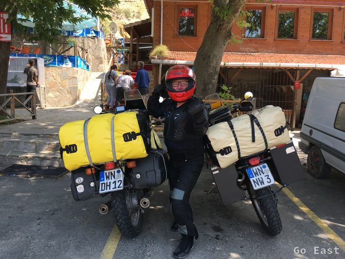
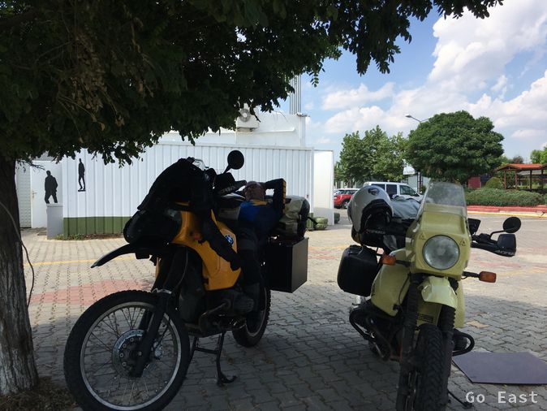
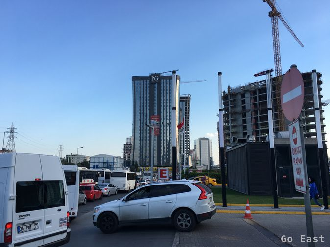
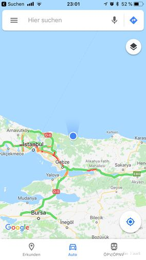

Nach dem Frühstück sind es noch ca. 50km bis zur EU Außengrenze zur Türkei.
Am Grenzfluss sieht es schon martialisch aus. Bewaffnete Griechen stehen bewaffneten Türken gegenüber.
Charlies Motorrad wird wird nach dem Zufallsprinzip ausgewählt und geröntgt.
Auf der Autobahn Richtung Istanbul mache ich während der Fahrt Bilder mit der TomTom ActionCam. Ich will sie ablegen und sie fliegt mir weg und wird überrollt. Echt dumm gelaufen. Glücklicherweise hatte ich zuvor die Bilder gesichert.

Kleine Rast unterwegs, Charlie im Gladiatorenanzug

Kleines Schläfchen auf den Maschinen
Die Autobahn nach Istanbul (15 Mio. Einwohner) ist tödlich. Übrigens passt Stuttgart ungefähr 25mal in Instanbul hinein. 4 spurige Stadtautobahnen die permanent verstopft sind. Es wird um jeden Meter gekämpft. Streetfighter ist hier Programm. Standspur ist als Überholsur definiert. Motorräder sind die letzten in der Hierarchie.
Wir finden einen MediaMarkt in Istanbul und ich kaufe gopro4 session.

Verkehrswahnsinn in Istanbul
Wir sind froh aus dem Verkehrswahnsinn bei 35+ Grad von Istanbul zu entkommen und retten uns ins GrandHotel in Sile am Schwarzen Meer. Es ist sehr schwül und regnet auch nachts.

Sile am Schwarzen Meer